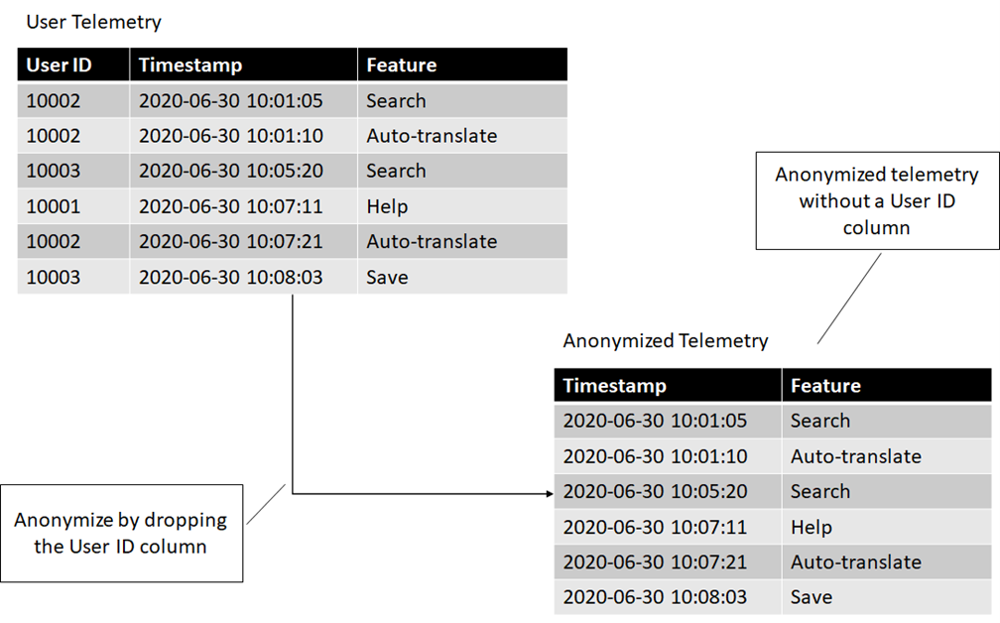
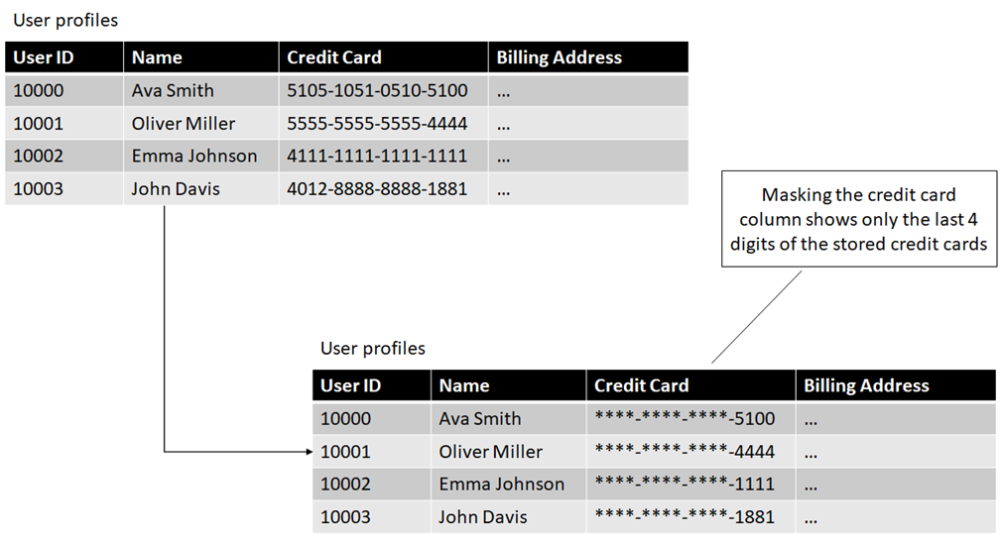

Changing Data Classification Through Processing
This is an excerpt from a draft of chapter 10 of my book, Azure Data Engineering, which deals with compliance. In this article we'll look at a few techniques to transform sensitive user data into less sensitive data. In the book, this includes code samples for implementation on Azure Data Explorer, which are omitted from this article. Let's start with a couple of definitions.
User Data
User data is data that can be directly tied to the user. This class of data is important since this is what GDPR covers. User data also comes in a couple of subcategories. One of them is End User Identifiable Information or EUII.
End user identifiable information is information that can directly identify the user. Examples of EUII are name, email address, IP address, or location information.
As data moves through our systems, we generate various IDs. Any data that we have tied to such an ID, for example order history for account ID, is called End User Pseudonymous Information or EUPI.
End user pseudonymous information are IDs used by our systems which, in conjunction with additional information (for example a mapping table) can be used to identify the user.
Note the important distinction: When we look at EUII, for example name and address, we can immediately identify the user. When we look at EUPI, for example account ID, we need an additional mapping to tell us which user the account ID belongs to.
In general, we have one primary ID (or several) which directly identifies the user, which we consider EUII, and multiple other IDs which indirectly identify the user through their connection to the primary ID. These other IDs are EUPI.
Changing Classification Through Processing
In general, we restrict the number of people who can access sensitive data. In most cases, access is on a need-to-know basis, where data scientists and engineers allowed to process this data have done some compliance training and understand the risks and liabilities.
In some scenarios we want to process data so that it becomes less sensitive. A good example is we want to open it up for more data scientists to look at. In this article we will look at a few techniques for achieving this.
Let's start by defining two datasets, as shown in the following figure:

The first dataset, User profiles, contains user accounts, including names, credit cards, and billing addresses. We omitted actual billing addresses to keep things short. This dataset also contains a User ID column which associates an identification number with each user. This is the primary ID in our system, since we can use it to link back to a user's profile information.
The second dataset, User telemetry, contains telemetry data we collect from our users. It contains the user ID, timestamp and product feature the user engaged with.
Let's see some techniques we can use on the User telemetry table to change its classification to something less sensitive.
Aggregation
The first technique is aggregation: we can take user identifiable information from multiple users, aggregate it, and get rid of the end user identifiable part. For example, if we collect telemetry from our users that captures which features of our product they are using, we can aggregate it, so we know how much each feature is being used, but not who used what.
The following figure shows how aggregation transform user identifiable information into data that can't be tied back to individual users.

Before processing, we could see exactly what set of features an individual user was using, which has privacy implications. After aggregation, we can no longer tell that. We still have valuable data -- we know which features of our product are the most used, which ones are not that important to our customers etc. We can store this data for analytics and ML purposes without having to worry about end user privacy.
Data aggregation is the processing of data into a summarized format. This can be used to transform the data so it can no longer be tied to individual users.
But maybe we want to know more: we want to see when each feature is used or how our customers use different features in conjunction. Now simply counting feature usage is not enough. We can use a different technique for that: anonymization.
Anonymization
We can use anonymization to unlink the data from the end user. Once the data is no longer connected to a user identifier, we can't tell which user it came from. Going back to our telemetry example, if we want to know when features are used, but don't care who uses them, we can get rid of the user identifier. The following figure shows how we can anonymize data by dropping the user identifiers.

Maybe this is not enough either. What if we still need to see which features are used together by a user, but we don't really care who the user is? We can still anonymize by replacing user identifiers (which can be tracked back to the user) with randomly generated IDs. The following figure shows how we can anonymize the data by replacing each user ID with a randomly generated GUID.

Note that we are intentionally not persisting a mapping between user IDs
and corresponding random IDs. We generate the random IDs once and
intentionally forget
the association.
Once this happens, we can no longer tie the data back to the user, so it is no longer user identifiable. We can still tie together datasets by the random ID, but there is no way to associate the random ID with a user.
Anonymization is the process of removing user identifiable information from the data or replacing it with data that cannot be linked back to a user.
If we get new telemetry from our users, we won't be able to generate the same GUID when anonymizing. Each time we run the query we will get different random IDs corresponding to our users. In some cases, this might not be enough. Or we might need to maintain that ability to link back to our original user IDs but restrict who can make that association. For these cases, we can use pseudonymization.
Pseudonymization
In this case, we have scenarios for which we still need to know who the data belongs to, but this is not needed for all scenarios. For example, we might want to keep track of which user used which features so we can notify them of updates to that feature. But for other analytics, it is irrelevant who the user is. For the first case, we have a small set of people who can view this association. For analytics, we have a large team of people looking at the data, but from their perspective, it is anonymous.
We can achieve this by pseudonymizing the data. The difference between pseudonymization and anonymization is that pseudonymization gives us a way to reconstruct the relationship.
When we looked at anonymizing data, we swapped out the user ID with a randomly generated ID. Unless we explicitly stored which user ID got assigned which random ID, we can no longer recover the link.
For pseudonymization, we replace random IDs with something more deterministic. This can be either a hash of the user ID, or an encryption of the user ID.
As a reminder, hashing is a one-way function. Give the result of a hash,
you cannot un-hash
it to get the original value. Encryption is
different -- an encrypted value can be decrypted if we know the
encryption key.
Pseudonymization is the process of replacing user identifiable information with a pseudonym. The data can be linked back to a user given some additional information.
Let's look at both approaches.
Pseudonymizing by hashing
If we hash the user IDs and provide a dataset with just hashes, the only way to tie this pseudonymous data back to actual users would be to take all the user IDs in our system and hash them to see where we find a match.
If we restrict the access to the user IDs, then someone who can only query the pseudonymized table can still see all the connections within the dataset (which features are used by which user), but instead of seeing a user ID, they see a pseudonymous identifier. The following figure shows the transformation.

Note that if we only have this dataset consisting of Pseudonymous ID, Timestamp, and Feature, we can't produce a user ID. On the other hand, if we have a user ID, we can always hash it and link it to the pseudonymized data.
We can use this technique in cases when the data scientists processing the pseudonymized data don't have access to the unprocessed, end user identifiable data. This way, they get a dataset that is, for all intents and purposes, just like the original, except there is no mention of user IDs.
This doesn't work if the user IDs are also visible since it is easy to hash them again and produced the pseudonymous IDs. One option is to keep the hashing algorithm secret and add a salt. In cryptography, a salt is some additional secret data mixed-in, to make it harder to recreate the connection. For example we can XOR the user ID with some number (our salt).
Now, as long as the salt is kept secret, someone can't get from user ID to the pseudonymous ID even if they know which hashing algorithm is used for pseudonymization.
Let's now look at the alternative to hashing: encryption.
Pseudonymizing by encrypting
If we encrypt the user IDs and provide a dataset with encrypted values, the only way to tie this back to actual users would be to decrypt. As long as the encryption key is secure and only available on a need-to-know basis, people that don't need to know can't recover the association.
This is similar to the hashing technique we just saw, except it is a two-way transformation. Even without having access to a user ID to hash, we can produce a user ID by decrypting an encrypted pseudonymized ID. Figure 6 shows how this would look like.

We will use encryption instead of hashing if we have a scenario in which we don't have the original dataset available, but we need a way to recover it. In this case, we can rely on the two-way transformation provided by encryption and restore the original dataset by decrypting the pseudonymized dataset.
An alternative to transforming data is masking.
Masking
Masking means hiding parts of the data from whoever access it, even if
the data is fully available in our system. Think of how social security
numbers are reduced to the last 4 digits: ***-**-1234.
Masking sensitive data makes it less sensitive -- obviously, even with bad intent, someone can't do much with just the last 4 digits of a social security number, with just the city and state of a home address, or with the first few digits of a phone number.
Masking the data does require an additional layer in between the raw storage and people querying the data, which determines who gets to see the unmasked, full dataset, and who is restricted to a more limited view of the data. The following figure shows how masking looks like for our User profile table.

Unlike our previous techniques, which transformed the data, this happens in-place. We still have the full credit card number stored, but not everyone querying the table will be able to see it.
Masking leverages an additional layer between the raw data and query issuers to hide sensitive information from non-privileged access.
The good news is many storage solutions and database engines offer such a layer out-of-the-box (see Azure Data Explorer's row level security for example).
Summary
In this article we looked at a few ways in which we can take sensitive data and make it less sensitive:
- Aggregating data makes it impossible to connect it back to individual users.
- Anonymizing data, while a bit more involved than aggregating, preserves the granularity of user-level data, while removing the identifiable parts.
- In some cases, we do have legitimate scenarios in which we want to trace back the data to actual users. In this case, we can use pseudonymization to make the data partially anonymous and only restore the link with the real user ID on a need-to-know basis.
- Hashing is a one-way transformation of the data. Given a pseudonymized ID, we can't recover a user ID. We can restore the association by hashing user ID again and joining on the pseudonymized ID. Adding secret salt to a hash makes it harder to restore the association (one would need to also know the salt value).
- Encryption is a two-way transformation, which requires an additional piece of information: a key. Given a pseudonymized ID, we can recover the user ID if we have the key by decrypting the data.
- Masking is another technique for hiding sensitive information. In this case, the data is not transformed, rather an in-between layer can hide sensitive information and only make it available when appropriate.
This are important techniques to know when dealing with sensitive data, since they all allow us to make more data available to more analytical scenarios without compromising on user privacy.